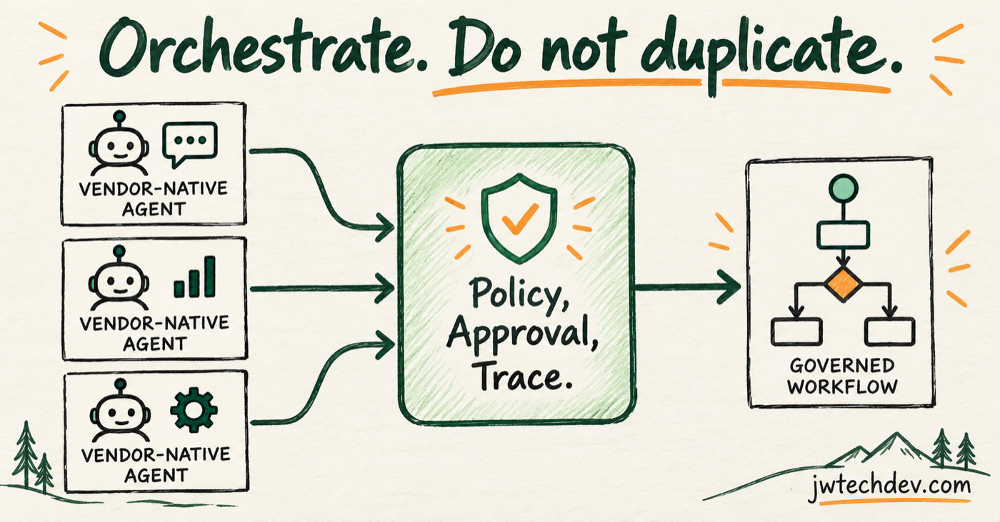

Do not rebuild vendor-native agents. Orchestrate them.
Adobe, Salesforce, AWS, and other platforms will keep adding native agents. The useful cross-system layer is policy, approval, traceability, and handoff, not another copy of every product feature.

Quick answer
Let vendor-native agents do the domain work they are designed for. Build the value around how work crosses systems: identity, allowed actions, handoffs, approval gates, shared evidence, cost policy, and recovery.
The wrong layer to rebuild
A marketing platform already knows its campaigns, leads, programs, assets, and object model. A cloud platform already knows its runtime, identity, observability, and service boundaries. Rebuilding those capabilities usually creates a thinner version with more maintenance.
The harder problem appears when one business outcome crosses several products and no single vendor owns the full workflow.
The control layer
A governed orchestration layer should know the goal, participating agents, tool permissions, data classes, write-action risk, approval mode, evidence requirements, cost policy, current state, and rollback path.
It should make handoffs visible. If a research agent passes work to a campaign agent, the system should preserve the request, constraints, evidence, permissions, expected return shape, and trace identity.
MCP and A2A solve different contracts
MCP is a strong fit for exposing tools and data. A2A is aimed at discovery, delegation, and collaboration between independent agents. They can coexist: agents communicate horizontally through A2A and call tools vertically through MCP.
The orchestration layer ties both to business policy and human accountability.
Five design questions
Which system owns the source of truth? Which actions may run without approval? What context must cross an agent handoff? How will one trace span vendor boundaries? What happens when a vendor agent succeeds technically but violates the workflow's business constraint?
Those questions create a more durable platform than recreating another vendor's assistant.
Sources checked
Want the starter kit?
Learn the systems thinking behind agents, tools, cloud infrastructure, and safe handoffs.
Get resources